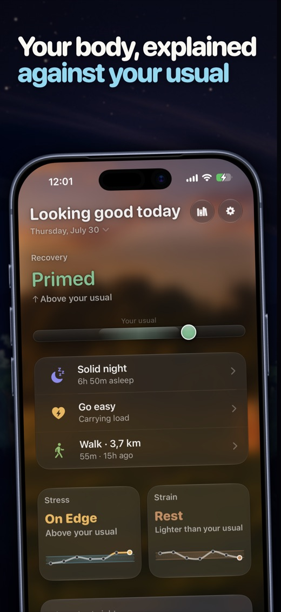
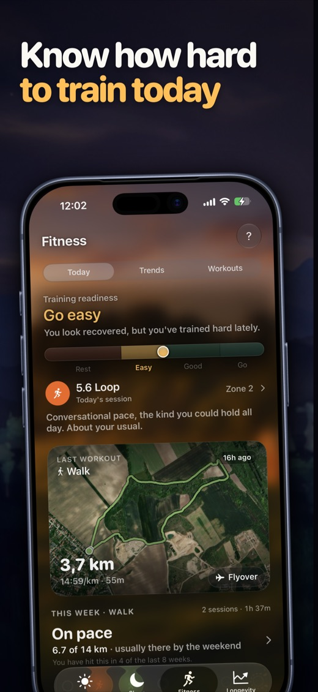
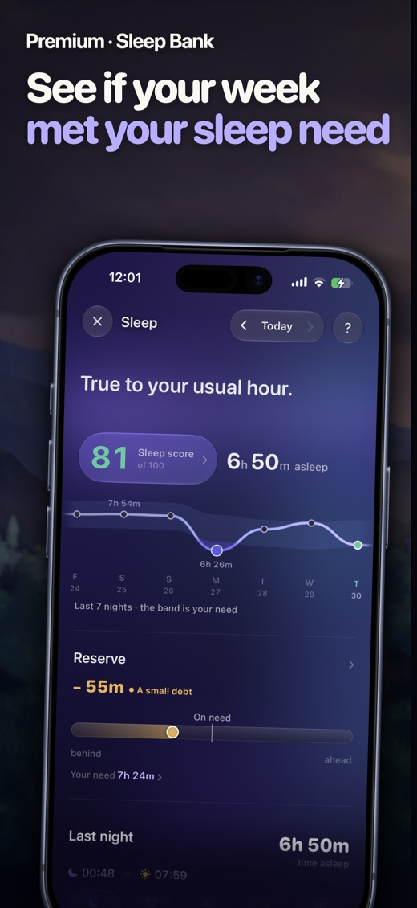
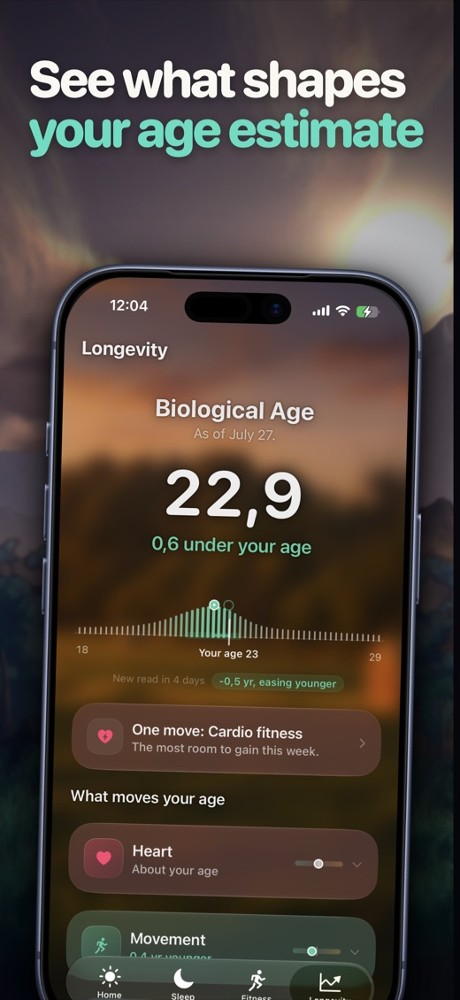

On-device health intelligence for iPhone
So Aera doesn't score you against one. It reads your sleep, recovery, stress and training against a baseline learned from your own nights and your own sessions. Then it explains itself, every time.




Aera hands you the reason. Wake up to a low recovery and it looks at what actually landed yesterday, a hard session, a short night, or both, and tells you what a day like that usually costs you, measured against your own comparable days. If yesterday was an ordinary walk, it says so instead of blaming it.
How long you slept, your stages, how unbroken the night was, your sleeping heart rate and your overnight heart rate variability. Watch-estimated stages are noisy, so they carry less weight, and Aera says so.
An overnight autonomic read built from your own 28-day baseline, alongside the training and sleep that co-occurred with it. Stated as association, never as cause.
A clear go hard, go easy or rest call, and a session built from the week you actually had. Load states named the way athletes name them, with no softened euphemisms.
A 3D flyover of any route. Splits by heart rate zone. Grade adjusted pace on hills. Whether you finished stronger or eased off. How your pace held against your heart rate.
Aera recognises the routes and stretches you return to, entirely on device, and times every pass against your own history.
Seven signals, each showing what it adds or takes away, and a candid account of where the estimate ends.
Tap any read and Aera explains how it was calculated, which research it rests on, and what it cannot tell you. The honest limits are part of the product, not a disclaimer buried in a settings screen. Where the science is contested, Aera says that rather than picking the flattering side.
Baselines are learned from you. Most apps compare you to a lab average or a 25 year old athlete. Aera watches your own rhythm over weeks and moves the baseline as you do.
Apple Health is the only source Aera reads from, and every score, baseline and trend is computed on the device. There is no account, no server and no health data upload. Nothing about your body is sold or shared.
Aera does include two standard developer tools, Mixpanel for anonymous product analytics and Sentry for crash reports, so problems can be found and fixed. Neither receives health data and neither is tied to your identity. The privacy policy sets out exactly what each one sees.
People who want to understand their body, not compete with strangers. Runners, sleepers, parents, students, anyone who has been told their numbers are normal when their body clearly isn't.
Aera is free to use. A subscription unlocks the Sleep Bank, Biological Age, Today's Session, Flyover replay, the Monthly Review, Your Places, Personal Bests, extended history and the Export Center.